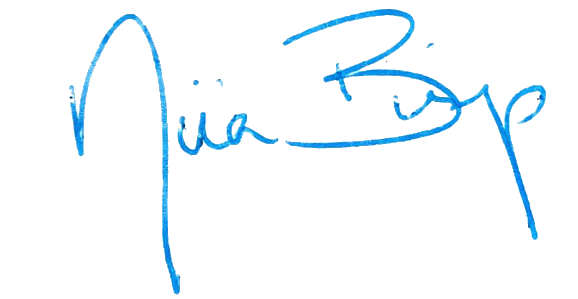
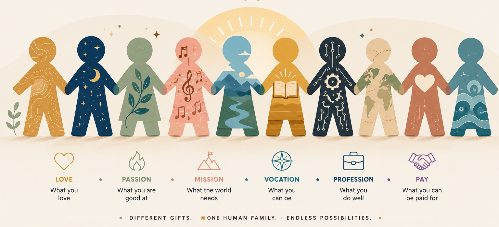

Fear of the grade. The ranking. The red pen. Of being wrong in front of
everyone. We call it rigor. But it's fear — and it costs us the kids.
Same mold · same test · that's not how children work
Kids run on autopilot — they react, and never notice they're reacting.
Fear makes them small: defend instead of ask, hide instead of serve, perform instead of become.
Help turns into a transaction — I helped you, so now you owe me.
We reward being seen, so kids perform kindness instead of living it.
Built for efficiency, compliance, standardization — everything but the child.
From the Founder
I didn't leave the children. I left the system.
I gave thirty years to classrooms. I left academia because it doesn't work —
not for the child in the back row, not for the teacher running on empty, not for any of us.
It isn't the kids who are failing. It's a machine built on fear, doing exactly what it was
designed to do. But I didn't leave empty-handed — I left with thirty years of watching what
does work, and I'll tell you plainly:
"Everything else is noise. What actually matters is whether kids feel safe enough
to be themselves — to ask what they care about, to serve, to speak truth, to love.
Everything else follows."

— Dr. Niia Bishop · thirty years an educator
Hunter College Elementary & High School · Amherst College ·
University of Michigan — M.A., Graduate Certificate in Women's Studies, Ph.D.
We're translating ancient wisdom — the Desiderata, Buddhism, the Four
Agreements — into how a classroom actually works. Not a philosophy on a poster.
An operating system for a school.
What if we built a school on love instead of fear?
Not soft. Not naïve. Real — where every practice is aligned with awakening,
and freedom and responsibility go together. That's what we're building.
Each child their own material · every one holding on
The Choice, A Thousand Times A Day
The opposite of love is not hate. It's fear.
Once a child can see the choice, they're free to make it. Everything below
sits on this one fork.
Fear says
Don't get it wrong
Protect yourself
Compete to win
React, then regret
Play small
Love says
Ask the real question
Serve without a claim
Add to the whole
Notice, then choose
What if you couldn't fail?
The Daily Practice
Right Speech.
Before you speak, you pass what you're about to say through five gates.
Not a rule — a moment of noticing. Meditation, embedded in how you live.
01Is it true?Not "does it feel true." True.
02Is it kind?Kind is not the same as nice.
03Is it necessary?Right now, from me?
04Is it helpful?To them — or only to me?
05Does it improve the silence?If not, the silence wins.
If the answer to most is no, you stay quiet. Not judgment,
not shame — the discovery that between the feeling and the words there is a door, and
you hold it.
The Ritual · Jijang Bosal
You come downstairs and find the laundry you forgot has been moved to the
dryer — washed, folded, waiting. Someone moved you forward. You'll never know who.
At circle time, someone says: "Someone helped me this week." No one asks who.
JIJANG BOSAL
The whole room answers — and no one needs the credit.
Help that makes no claim, keeps no ledger,
asks nothing back. The deposit that grows your account without anyone watching it grow.
Not be kind so you're seen — serve because your people matter.
The Game — Rethought
Not a scoreboard. A cup.
Gamify it with points and a leaderboard, and some child is instantly at the
bottom, "getting less." That's fear again, wearing a game's clothes. So there is no
leaderboard. There is one cup, and the whole room pours into it.
The room fills it, together.
What raises the water
A true, kind word. A service no one saw. Sitting with
someone who needed a body beside them. Helping another mind flip a thought. Letting
yourself be known. Noticing someone who felt invisible.
Your pour never lowers anyone else's — love isn't scarce. It raises the level for
everyone. You don't beat a classmate. You beat yesterday's water line, together.
The Rule That Makes It Real
You can't drink from a cup you haven't poured into.
Not punishment — truth. You can't borrow against
love you never deposited. But pouring costs nothing and helps everyone, so the only way to
be held later is to be generous now. The cup remembers who filled it.
How It Holds Together
One principle, threaded through all of it.
Right Speech
Every pause before a withdrawal is a pour — you deposit each time you choose the kinder true thing.
Jijang Bosal
Service with no name attached. Pouring anonymously, with no claim on the credit.
Buddy Bench & Solo Space
The cup is yours to refill too. You can't pour from empty — so there's a place to be together, and a place to be alone.
Flip It & the 7 Habits
You can't shift a thought you never noticed. All of it needs the same thing: a mind watching itself.
The Ground Beneath
Old truths, made into how a room works.
We didn't invent this. We translated it — from wisdom that has survived
because it is true.
Desiderata · Max Ehrmann
"Go placidly amid the noise and haste, and remember what peace there may be in silence."
The Four Agreements · Don Miguel Ruiz
Be impeccable with your word. Don't take anything personally. Don't make assumptions. Always do your best.
The Question
What would you do if you knew you could not fail?
Why They Learn
Every child arrives with a reason for being.
The Japanese call it ikigai — where what you love, what you're good
at, what the world needs, and what you can offer all meet. Our work isn't to pour children
into one mold. It's to help each one find theirs.

Interest isn't a nicety — it's how purpose gets found. A child
who has found their why never has to be forced to learn.
Embodied, Not Just Believed
Two rooms every child can name.
Buddy Bench
A place to be with someone.
Not to fix or teach. Just to be held. "I need to sit with someone" — and you go. Two people, quiet, present. You remember you're not alone.
Solo Space
A place to be alone.
Not exile. Sacred solitude. "I need solo space" — and everyone understands. You process, you clarify, you refill your cup, you come back.
The Anthem
This year's gonna be different.
A song for the first day —
and every day after. Press play; the words are below.
This year's gonna be different, different from before.
We'll build and dream and wonder, we'll open every door.
We'll make things, we'll try things, we'll ask a thousand "Whys?"
This year's gonna be different… we're learning how to fly!Pack your backpack, tie your shoes,
we've got big adventures waiting for you.
Bring your questions, bring your smile, bring the dreams you've had awhile.
You don't have to know it all, big ideas can start out small.
Every voice has something new… and this year starts with you!Look around, what do you see? A place for you, a place for me.Love to draw or love to read? Love to dance or plant a seed?
Want to build or write a song? Here, you know you can belong.
Maybe science lights your spark, maybe stars or sharks or art.
Whatever makes your heart beat fast… let's start there at last!Sometimes we'll get stuck… that's okay!
Sometimes we'll fall down… that's okay!
We'll take a breath, we'll try again, we'll help each other, friend to friend.This year's gonna be different! Watch what we can do!
We'll build a kinder future, starting here with you.
We'll make things that matter, we'll share them with the world.
This year's gonna be different… every dream unfurled!What's alive inside of you? Let's find out… together. 🌱
What We're Building
Not soft. Not naïve. Real.
A place so full of love that fear can't survive in it — where
every practice is aligned with awakening, and the only winning move is to steward more love.